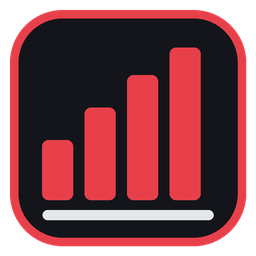
Aion 2 MeterYour whole party's damage, live, right on top of the game. Click anyone to see every skill they used, watch the boss HP and break gauge, and look back at any fight later.
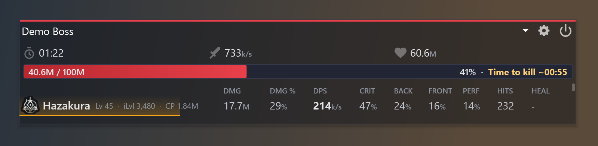
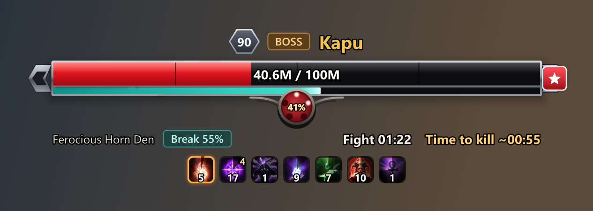
Built for bosses and expeditions. Small and see-through over the game, detailed when you open it up.
Every player ranked by damage, with their class, level, item level and combat power.
Click a player and see exactly where the damage came from.
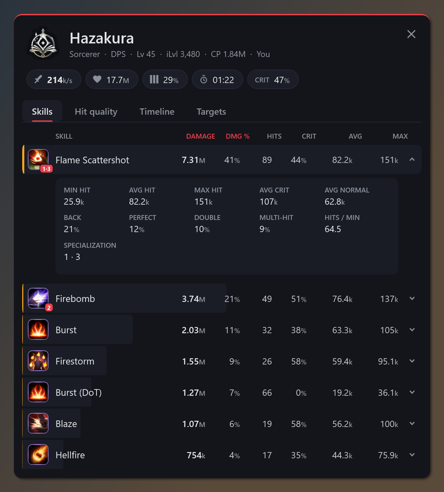
Your rotation laid out across the fight, next to the boss HP.
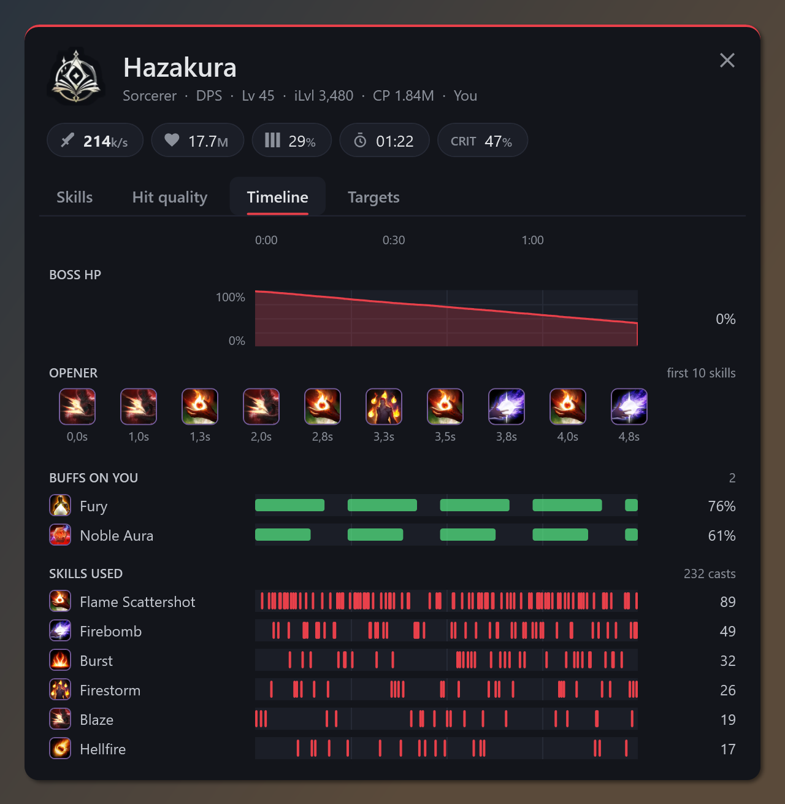
Separate little windows you can put anywhere, each with its own size and background.
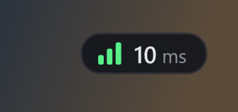
Every fight is saved by place, so you can open it again later.
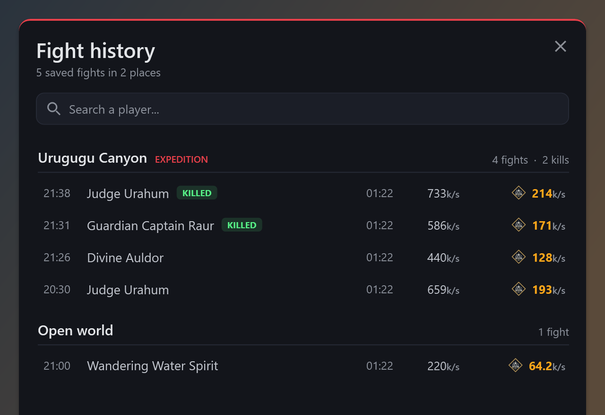
ACC stands for Aion Custom Cooldowns: your class's skills in a little bar, ready or the seconds until they're back.
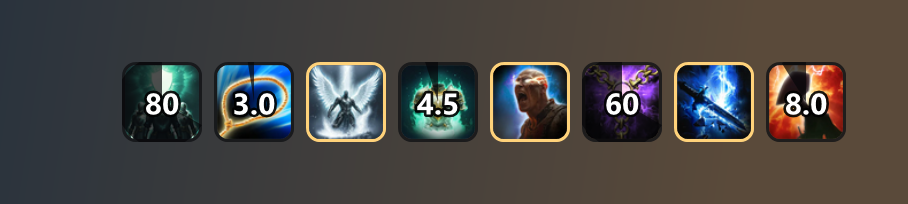
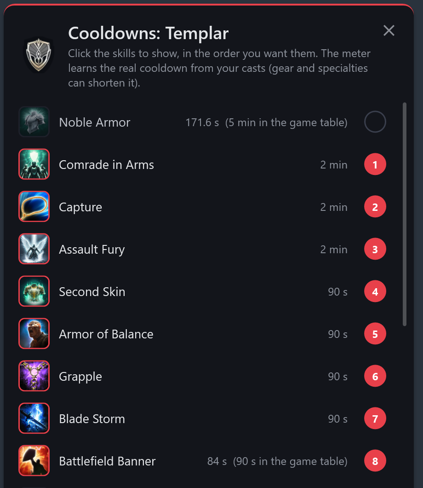
Never miss a rift again. A heads up over the game a few minutes before.
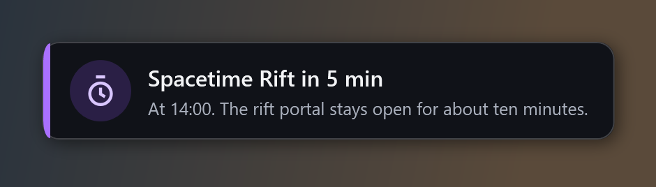
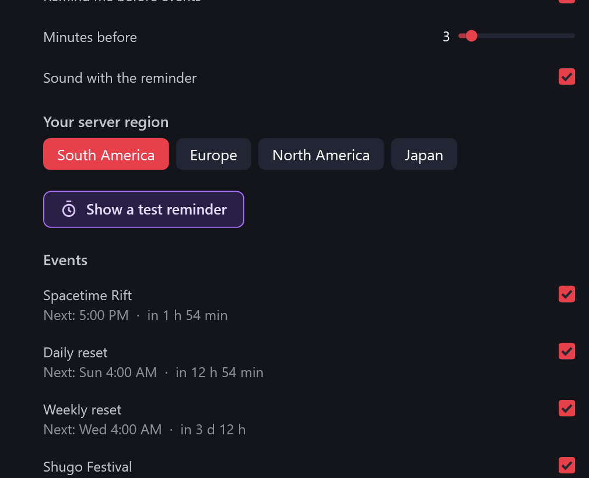
Every update keeps a copy of the version you had. New one acting up? Go back in one click.
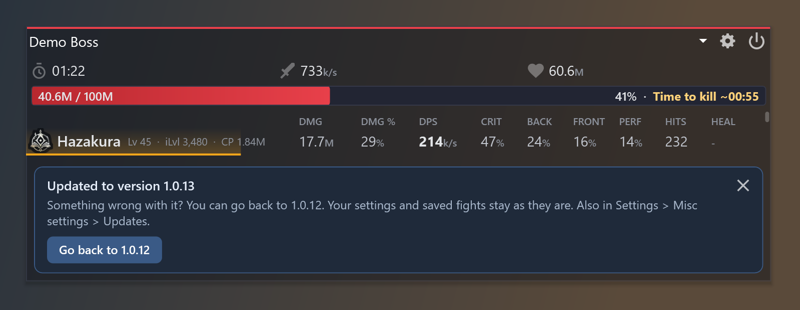
No admin rights needed for the meter itself.
Free, from npcap.com. When the installer asks, tick WinPcap API compatible Mode.
Download Aion2Meter-win-Setup.exe above and open it. It installs and starts on its own.
Start the meter before you pick your character so it catches everyone from the first pull.
Windows SmartScreen may warn you the first time because the installer isn't signed yet. Click More info, then Run anyway.
AION 2 has no official API, and you don't need one. During a fight the game server keeps telling your PC what's happening: who hit who, how hard, crits, boss HP, buffs, deaths.
The meter just reads that traffic as it arrives and adds it all up. That's why it needs Npcap, the thing that lets it see the traffic. Pretty much every meter in every MMO works like this.
Updates download in the background and install when you close the meter. Want them now? Right click the tray icon and hit Restart to update. A copy of the version you had is kept every time, so if a new one ever acts up you go back in one click.